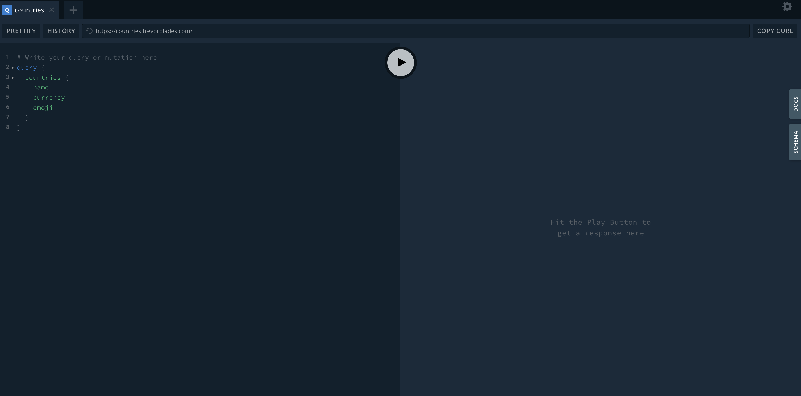

Fully typed GraphQL API's with TypeScript and Codegen
Hello everyone 👋
I'm Ryan
Senior Software Engineer @ Shell Recharge Solutions
TypeScript | GraphQL | 4x AWS
Topics that we will be covering today
- Quick introduction to GraphQL
-
What are the pitfalls and errors we could face without types
-
How we can use TypeScript to make our code safer and fun to work
with
-
How we can leverage this type safety without writing the types by
hand 🎉
Data fetched from a single endpoint

No over/under fetching (a predictable response)
Great initial documentation 📘
Our example app
A simple React app created with Vite
Backend GraphQL API:
Countries
Interacting with the API using Apollo Client
Writing a simple query to fetch countries
Quite tedious isn't it 😫
Is there a better way??? 🤔
A type generator for your GraphQL API
Loads of plugins for any library you use
For both the frontend and the backend
Let's refactor 😃
How good was that 😲
The safety of TypeScript that automatically updates with the GraphQL
schema is an amazing developer experience